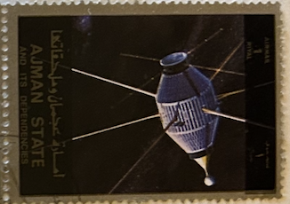
| SOURCE | TITLE| IMAGE MATCH | click to source page |
| HipStamp | Ajman Stamp-Airmail-Space Programs & World Famous Peoples CTO Large Sheet VF | Middle East - Saudi Arabia, Stamp / HipStamp | 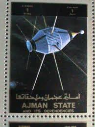 |
| Colorado State University | Explorer-series satellites | 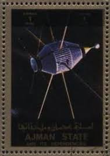 |
| sellosmundo.com | Sello: POSTE ITALIANE 30 CTS MARRONde Italia Europa | 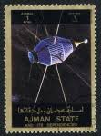 |
| Dreamstime.com | Ajman Airmail Stamp (circa 1973) from "Spatial Conquests" Series Editorial Photo - Image of service, planet: 370827296 | 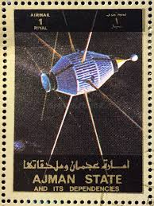 |
| WorthPoint | VTG 1969 GRS-A/Azur NASA German Research Satellite Metal 7" Desk Shelf Model NR | #1792234603 | 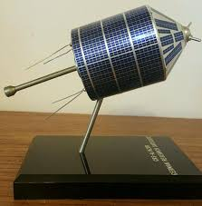 |
| WorthPoint | Vintage ORIGINAL AZUR , West Germany Satellite Desk Model 1969 / Authentic NASA | #1832980555 | 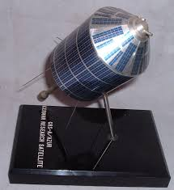 |
| Alamy | Uae uae satellite hi-res stock photography and images - Alamy | 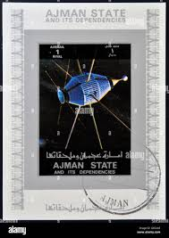 |
| eBay | Vintage NASA Ranger IV Spacecraft Astronaut Old Exhibit Card Old Store Stock #8 | eBay | 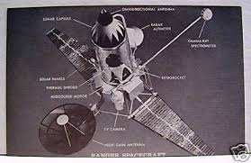 |
| Wikipedia | Syncom - Wikipedia | 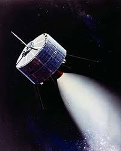 |
| Blogger.com | Dreams of Space - Books and Ephemera: Astronomy (1963) "Whitman World Library" | 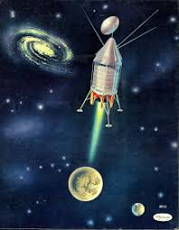 |
| First communications satellite launched successfully | Cape Canaveral, FL | 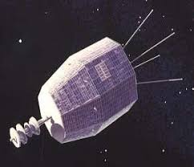 | |
| Wikipedia | Solar Radiation and Thermospheric Satellite - Wikipedia | 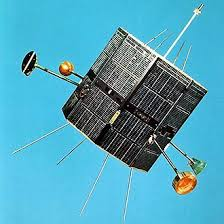 |
| Declassifying JUMPSEAT: an American pioneer in space > > News Article : r/espionage | 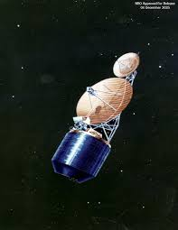 | |
| code.blog | Launch System – Station E05 | 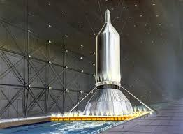 |
| airbase.ru | The Planetary Report | 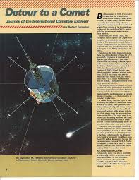 |
| Wikipedia | April 1970 - Wikipedia | 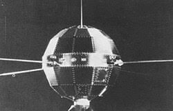 |
| Since the 1950s, China's space program has made remarkable progress. Here are four major milestones in its space odyssey: 1. Dongfanghong-1 – China's first satellite (1970) 2. Shenzhou-5 – China's first manned | 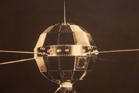 | |
| India.Com | 7 historic NASA space missions everyone should know | 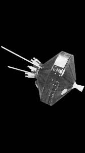 |
| zenker.se | Swedish Space Corporation 25 years - part I | 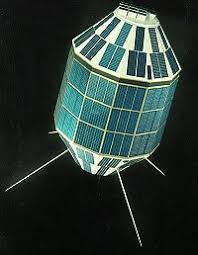 |
| The University of Iowa | SSS-A_scan.jpg | 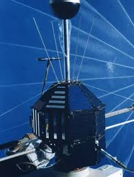 |
| Tumblr | 70s Sci-Fi Art — Pierre Mion | 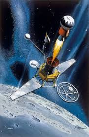 |
| RF Cafe | Telemetering - Vital Link to the Stars, November 1959 Popular Electronics - RF Cafe | 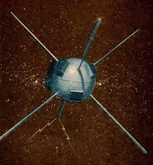 |
| WION - #TodayInHistory | 1964: World's First geostationary communication satellite 'Syncom 3' is launched | Facebook | 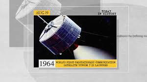 | |
| theolympians.co | Live from Tokyo, It's Saturday Morning Live” – The Olympians | 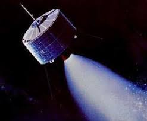 |
| 元(zeyuanliu456) – Profile | Pinterest | 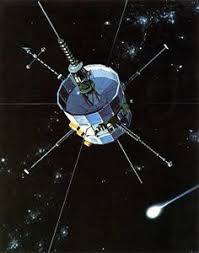 | |
| X | Le satellite XJY-7 : | 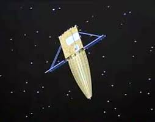 |
| Wikipedia | أرييل 4 - ويكيبيديا | 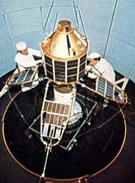 |
| Fandom | Ranger program | National Aeronautics and Space Administration Wiki | Fandom | 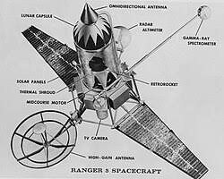 |
| 光明网 | China's first man-made satellite launched in 1970_GMW.cn | 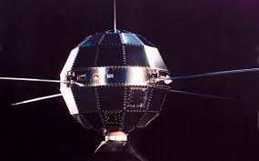 |
| Friends of CRC | The ISIS Satellite Program | 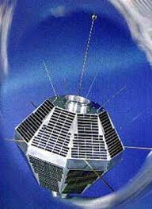 |
| skyrocket.de | SS 1 (Shinsei) - Gunter's Space Page | 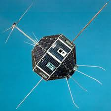 |
| US spy satellite agency declassifies high-flying Cold War listening post | Jeff Hall | 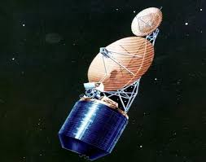 | |
| Secret Projects Forum | Large space structure experiments for Apollo Applications Program (AAP) | Secret Projects Forum | 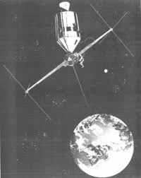 |
| RussianSpaceWeb.com | Russia's military spacecraft | 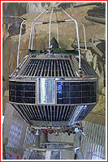 |
| China.org.cn | Pictorial history of the People's Republic of China - china.org.cn | 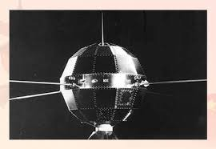 |
| Milano Cortina 2026 | The Impact of the Mass Media on the Image of Olympic Cities (Part 2) | 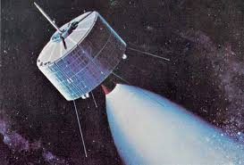 |
| NASASpaceFlight.com - | Defense Meteorological Support Program (DMSP) | 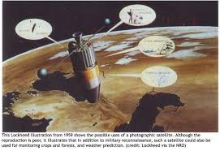 |
| Universe Space Tech | How different nations paved their way to outer space | 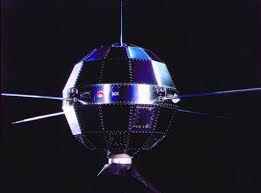 |
| Wikipedia | Fast Auroral Snapshot Explorer – Wikipedie | 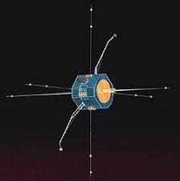 |
| Kerbal | This Day in Spaceflight History - Page 22 - Science & Spaceflight - Kerbal Space Program Forums | 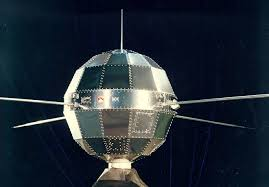 |
| eBay | Rare VINTAGE [1969] REVELL AMERICA'S SPACE PIONEERS! | eBay | 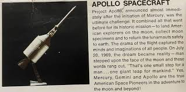 |
| Phys.org | Contact with 36-year old spacecraft results in dancing, hugs. Now comes even bigger challenge | 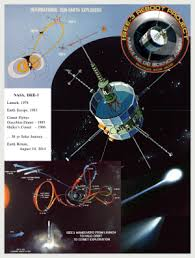 |
| Blogger.com | A Dead Good Blog: Celestial Bodies | 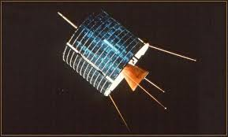 |
| Space Daily | Documenting China's First Launch | 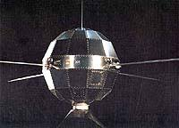 |
| NASA (.gov) | N 65 -?! 9:~ 1 | 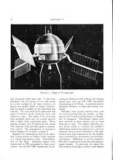 |
| skyrocket.de | ISEE 3 → ICE (Explorer 59) - Gunter's Space Page | 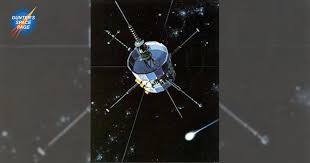 |
| Stamp and Cover Galaxy | SCG3330 - Manama 2 Rls "Lunik 3" Airmail Stamp (1960s) – Stamp and Cover Galaxy | 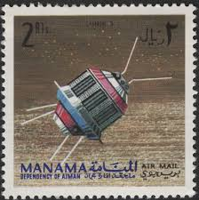 |
| NASA (.gov) | N90-10154 | 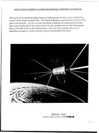 |
| Encyclopedia Astronautica | SRET | 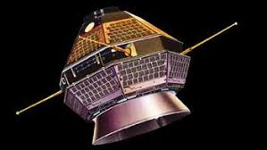 |
| skyrocket.de | ETS 1 (Kiku 1) - Gunter's Space Page | |
| Quizlet | Science in Action 9 - Unit E Vocabulary Flashcards | Quizlet | |
| Weebly | 1957-60 - Space Pioneers Space Site (S.P.S.S) | |
| ✨ Exploring the Cosmos with Antriksh! 🚀🌌 The universe continues to amaze us! This week, the Vera C. Rubin Observatory spotted over 2,100 asteroids in just seven days, opening new windows into | ||
| eBay | Comet by Carl Sagan & Ann Druyan (Paperback/Softcover Book 1985) | |
| PICRYL | 52 Parade of progress, Glenn research center Images: PICRYL - Public Domain Media Search Engine Public Domain Search | |
| loworbitpodcast.com | Self-Titled – Low Orbit | |
| Proach Models (@ProachModels) • Facebook | ||
| eBay | SPACE 1960s US Space Age Science Cards NASA. Astronauts LUNAR SPACE PROGRAM!!! 8 | eBay | |
| eBay | Diagram of RANGER 5 SPACECRAFT Moon Travel 1962 Press Photo | eBay |